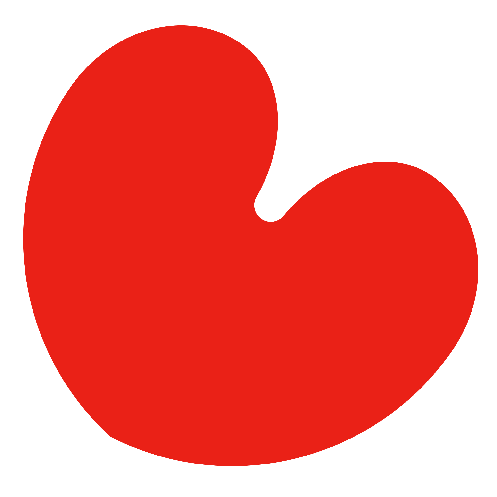
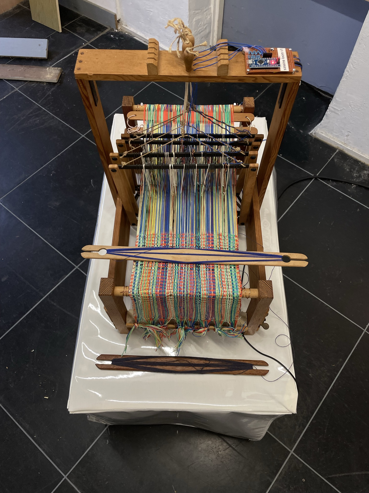

Caro de Valk – Intertidal zone(s)
is an installation constructed from textiles, metal, and glass, reminiscent of the flora and fauna found in and beneath specific tidal areas in the Netherlands. From small details of microorganisms and ecosystems to the broader scale of the effect water has on our planet, a playful moment of hope is shared while simultaneously showing what might disappear in the future.
This work was presented during the Gaudeamus music week. I did the interaction and sound design for the work, using a Teensy to produce the sounds triggered by capacitive touch and a distance sensor.
Nikola Woudstra - singing loom
is a tiny functioning loom with four shafts that make contact with copper wires that are in turn transformed into different sounds. While weaving sound is created and the woven textile becomes the recording device of the sounds that have transpired, A tangible translation of binary counting, represented in colour and texture. Will be shown during ‘SWARM’, a group exhibition at ISOAmsterdam for Amsterdam Art Week.
For this work I made a custom synthesizer and composed the sounds it makes when weaving.
